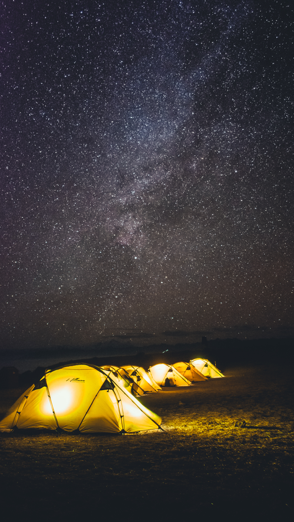
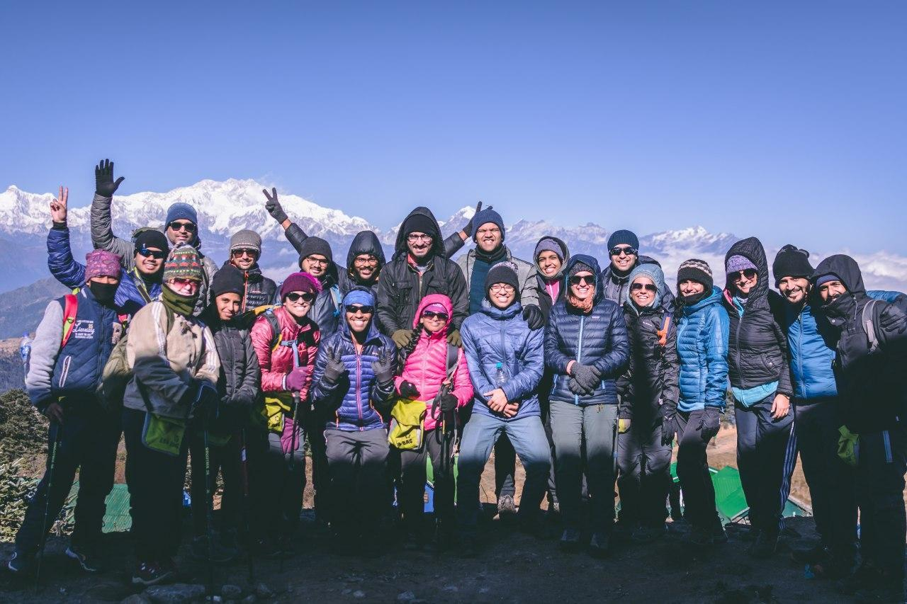
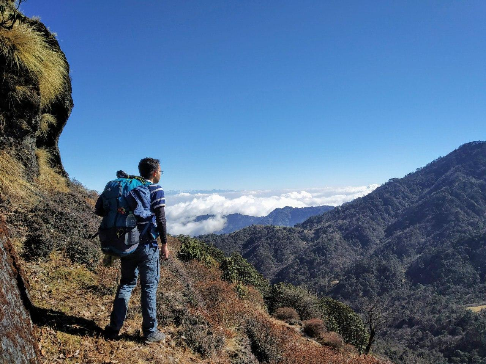

Sandakphu Trek
Growing up I've always been interested in trekking; So, naturally when
a friend suggested that we should go for a trek in 2018, I was kinda
skeptical and kinda excited. Skeptical mainly because it was a
significant amount of money including all the equipment I had to buy
for a high altitude trek in the winter; and excited because it was a
trek. My very first trek. I had a lot of expectations in my head.
Why Sandakphu ?¶
My friend and me wanted to go for a different trek but we couldn't get
the booking in time. So we choose Sandakphu. Apart from that Sandakphu
was on our radar mainly because of the length of the trek and the good
reviews. Both of us wanted to do something that was a challenging and
lengthy so after Goechala; Sandakphu fit the bill perfectly.
Preparation¶
The preparation of this trek involved two parts mainly.
Firstly, I had to prepare myself physically for the trek. I was not
too worried about the physical part since I walk a lot on a regular
basis and I also started running after moving to Mumbai.
However for this trek I needed to buy some rather expensive equipment.
I needed to buy one rucksack, and some clothing for the low
temperature and shoes. The clothing was most important. I did not want
to buy something too expensive and too specialized for the trek. I
wanted something more versatile.
Buying the rucksack was easy. I bought a 60L pack. I really wanted to
buy a 70L but realized that it would be too much.
Buying the clothing was more fun! When you are selecting clothing for
treks, you want to be as efficient as possible because everything you
own, you have to carry it yourself. One of the techniques is to use
layering. There are plenty of good websites online that talk about
layering (fyi. the layering information on IndiaHikes site is shit and
absolutely not reliable).
The layering can be quite complicated but ultimately it boils down to
minimizing the loss of heat (clothes do not generate heat, instead
they keep you warm by minimizing heat loss). So tl;dr I bought two
polyester base layers and one hollow-fill jacket from decathlon. The
hollow-fill jacket was good enough for heat but under certain extreme
windy conditions I did find it a bit too cold as it is not completely
wind-proof. But it was good enough for this trek.
For shoes I decided to rent a pair from IndiaHikes.
The Trek¶
The trek was from 22nd to 28th of December. We picked this batch
hoping that we would get extreme cold temperature.
On 22nd we met the rest of the team the NJP station in West Bengal and
we started off to Jaubhari. Jaubhari is the IndiaHikes base camp for
the Sandakphu trek. At Jaubhari we were briefed about the trek by our
trek leader. I was really surprised to know about the various
activities that IndiaHikes does on the mountains to make the treks
more sustainable. Someone from IndiaHikes also briefed the entire team
about the benefits of using menstrual cups which I found really cool!
After this out medical parameters were checked and recorded, followed
by some dinner. Jaubhari is at 2134 meters.
At Jaubhari we also received our rented equipment. I rented a shoe but
for some reason I could not feel comfortable in them. They felt
different. So against the advise of the trek leaders and other fellow
trekkers I decided to continue the trek in my regular shoes.
One 23rd, we reached Tumling which was at 2970 meters. The trek was
fun. We stopped in the middle of the trek for lunch. At Tumling the
temp was somewhere around 2-5 C.
On the way to Tumling the waist belt of the pack of a fellow trekker
got ripped. At Tumling we managed to get hold of some needle and
thread and stitched the ripped belt. It was a hacky job but the belt
worked till the last day of the trek. Note to self: Carry needles and
nylon thread.
One thing that was constant throughout the trek were the view of the
Everest on the left and Kanchenjunga on the right. We could see them
everyday, which is a welcome change from the normal stuff we are used
to seeing everyday. :-P
Lhotse, Everest, Makalu peaks from the right.
The weather was quite cold which was quite enjoyable for me. I went
for a walk after dinner to experience the cold and also to test my
jacket. I did remove my jacket for a bit and it got too cold too
fast. The jacket was doing its job perfectly and I was satisfied with
my purchase. :-P
On 24th we reached Kalipokhri which is at 3170 meters. I do not
remember the details of this days trek. I do remember that at
Kalipokhri all of us gathered in the hut where we were supposed to
have dinner a all of us sang. It was a beautiful experience.
Kanchenjunga.
After dinner I headed out for another walk. I told three people that I
would be going outside and where I would be going and gave them a
tentative timeframe. There was a short hill nearby our lodge. I
fancied walking up it in the morning but couldn't. So now was my
time. It was exceptionally dark although the moon was
present. thankfully my headlamp came handy. I was climbing the hill
from the leeward side so I could not figure out the wind speed. On top
it was another story. It was extremely windy. It was good. This was a
good place.
On 25th we reached Sandakphu which was at 3577 meters. It was quite
cold, but the views were amazing.
The trek to sandakphu was mostly thorough a motor-able road although
there were certain shortcuts which were somewhat more technical than
the road. Wile trekking we were also picking up small pieces of
plastic. I managed to pick up a used sanitary napkin (who the fuck
throws a sanitary napkin out there). Anyway, I also managed to
annoy a co-trekker when I was being stupid and picked up a water
bottle that was not in a safe position (sorry!!).
We had some time to kill in Sandakphu so we all got together and sang
and played dumb charades. It was my turn and I froze completely
(again!!). At this point I should just stop playing these games.
We also saw the milky-way. This was the first time I was seeing the
Milky Way and it was amazing. :-)
On 26th, we left from Sandakphu and went to Sabargram located at 3600
meters. This place was really cold. I helped pitch some toilet tents.
We also managed to do some amazing photography and got good shots of
the milky-way.
This was our camp location at Sabargram.

On 27th we were supposed to reach Phalut which is at 3642 meters and
then descend back to Gorkhey which is at 2300 meters. This day was too
much fun. By the end of the trek I was running down the hill along
with our guide Buddha Ji.
There is a river flowing through Gorkhey and some of us went there to
dip our feet in the stream. I managed to slip and fall down into the
river; thankfully I did not get too wet otherwise I would be in
trouble.
Me and an equally crazy co-trekker decided to compete about who can
keep their feet in the cold water for the longest time. I won that
competition. The water wasn't that cold.
As this was the second last day of the trek we all gathers in the
men's dorm and everyone shared small bits and pieces about what they
would be taking away from the trek. This was another noteworthy
experience.
28th marked the last day of the trek and quite possibly the last day
some of us would ever see each other again. We started off early in
the morning and we reached the final spot at Sepi well ahead of time.
We had lunch and then we took vehicles to Jaubhari (base camp) where
we were supposed to return our rental equipment and pick up other
stuff for the journey back home.
The journey to Jaubhari wasn't too special, except everyone was tired
and I think everyone knew that the trek had already ended. It felt
kinda sad to realize that there was a very good chance that none of us
would see each other ever again.
The journey from Jaubhari to NJP was quite interesting. We had a train
to catch so we were under the clock. On top of that the weather got
significantly worse and it started snowing heavily. It was snowing so
much that we couldn't see the road ahead, thankfully though, the
driver of the jeep knew the route and he cold drive under those
conditions. I puked on the way (Is it really trekking if you don't
puke). We reached the railway station to find that the train was
delayed. We all said our goodbyes and promised to stay in touch.
And that was it. My first trek had ended. :-)
The entire group for the trek

What does trekking mean for me ?¶
I like being self-reliant. I get a lot of pleasure out of doing
everything I need myself. It's about being able to solve my own
problems myself and also understand how the world works in some tiny
manner.
I also believe in owning less and living a simple, minimalist and
sustainable life. People who know me, know that I have very little
respect for the more common needs of life. The ultimate target would
be to carve a life in which I do not own anything I do not need and
quite possibly live out of a suitcase. :-P
I also enjoy solitude more than the average human being (or so I
think). I also enjoy walking a lot. Walking helps me orient myself
wiht my thoughts in some sort of way. Whenever I am having some
(any!!) trouble, or I can not understand something I am studying or I
start feeling lonely, I go for a walk. I enjoy the conversations I
have with myself during these walks. I walk to unwind after a
stressful day. I regularly walk home (roughly 6 kms) after a weird day
at work.
Trekking is something that ties all of this together in some weird
sort of way. It makes you realize what all you do not need. It helps
you declutter.
There is something thrilling about carrying everything you think
you can need in a bag and walk into the wilderness. Now, the trek was
not like "walking into the wilderness"; in-fact far from it actually,
but I guess this is the beginning. I would actually love to trek in a
completely un-supported fashion but right here, right now, its not
feasible. Maybe someday. Right now, this is good enough. :-)
That's it. Thanks for reading. :-)
I will end this with a picture of me.
